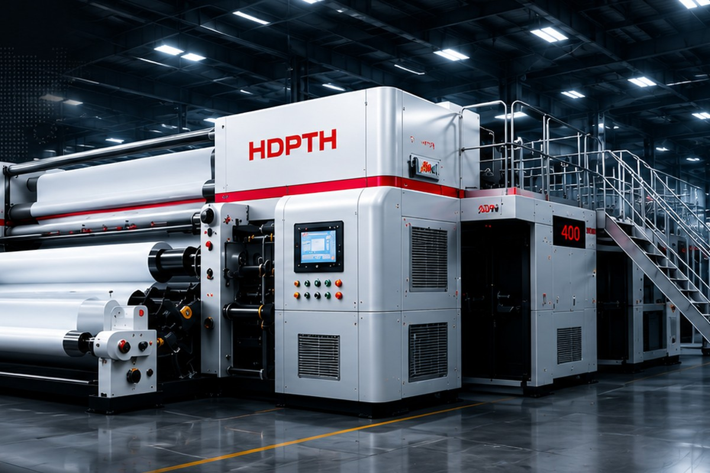

How to Choose a Nonwoven Slitting Rewinding Machine
Target keyword: nonwoven slitting rewinding machine. Intent: purchase decision. This topic attracts buyers preparing RFQs and helps AI search summarize selection factors.
Read articlePractical guides for overseas buyers selecting nonwoven slitting, rewinding and converting equipment.
Target keyword: nonwoven slitting rewinding machine. Intent: purchase decision. This topic attracts buyers preparing RFQs and helps AI search summarize selection factors.
Read article
Target keyword: slitting rewinding perforating machine. Intent: comparison and solution selection. This helps buyers identify the right process before contacting a supplier.
Read article
Target keyword: automatic tension control nonwoven slitter rewinder. Intent: technical evaluation. This supports high-quality inquiries from buyers comparing machine quality.
Read articleLearn what information to prepare before requesting a machine quotation.
Read guide
Send your material, width, speed and application so HDPTH can recommend a practical line configuration.
Talk to an engineer